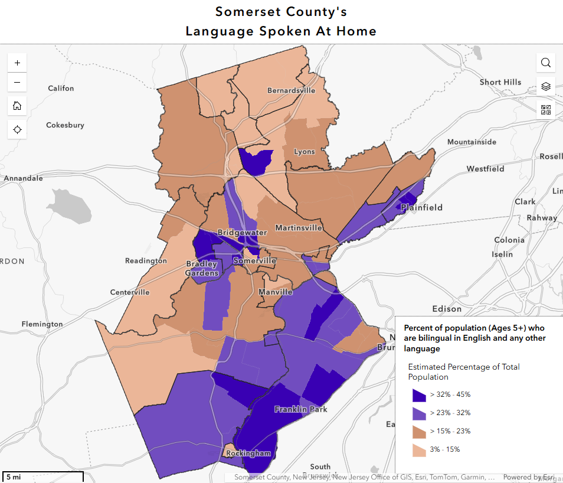
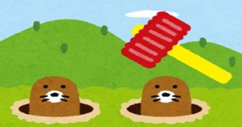

Robert Esposito & Yhosep Barba
Rutgers University
2026-04-06
Who are we? CENTER THIS
What do we do? CENTER THIS
Our objectives: CENTER THIS
What is bilingualism?
What myths exist about bilingualism?
What advantages are there to bilingualism?
How can we contribute to maintaining bilingualism?
Do you consider yourself bilingual?
Four components: - read / write / speak / listen
CHANGE THIS SLIDE SO THAT IT’S IMAGES, NOT JUST TEXT
How many languages are there in the world?
How many countries are there?
More than 33 languages per country
The truth:
ADD IMAGES, NOT JUST TEXT Maybe one slide per level US > NJ > Somerset
https://www.census.gov/acs/www/about/why-we-ask-each-question/language/

https://experience.arcgis.com/experience/cbd39e908efc459abbc2aa51916aed09/page/Language-Spoken-At-Home
ADD MAP HERE
Being bilingual is like being two monolingual people in one body.
You have to have proficient skills in speaking, reading, writing, and listening to be considered bilingual.
Your ability to speak your languages do not change over your lifetime.
FALSE.
No hay separación de idiomas, los lenguajes están interconectados como si fueran parte de una tela de araña, si un hilo se mueve, hace vibrar toda la tela de araña.
A bilingual’s two languages are always “on” (Paradis, 1993)
This is important when we want to speak and read in one language

Sometimes we use the wrong word:
FALSE.
Bilingualism comes in all shapes and sizes.
People who study dead languages like Latin or Greek might only be able to read.
Many languages do not have written forms.
Many people who grow up in the US are exposed to a language other than English at home, and there are many outcomes:
Language attrition.
Switch dominance.
Bilingual children can’t achieve/gain the same knowledge that monolingual children can.
FALSE - Monolingual children are evaluated in phases - Bilingual children too! - Problem: the same scale exam is normally used to evaluate these two different populations.
THE TRUTH: add some truths & clean up the FALSE statements
Bilingual children sometimes mix their languages. Are they confused? Is it too hard to speak two languages?
FALSE - Bilingual children know what language to speak and with who ADD CITATION AND AGE - Mixing languages isn’t a sign of confusion or laziness
THE TRUTH: - Bilinguals who mix languages actually know with whom to mix and when it’s (not) appropriate. ADD CITATION - There are rules to mixing languages – it’s not random! - Mixing both at the same time is a sign of advanced knowledge of the two languages! ADD CITATION - We call this mixing codeswitching
Rate these sentences on how natural they seem to you:
“Es una combinación de fenómenos de contacto distintos. Estos fenómenos incluyen préstamos, calcos, extensiones semánticas, préstamos temporales, mezclas, entre otros” (Casielles-Suárez, 2017)
“Spanglish is what we speak, who we Latinos are, and how we act and how we perceive the world” (Morales, 2007)
“Si quieres empezar otra pelea, I’m not in the mood. Anyway, vine a otra cosa” (Prida, 1991)
Do you have other examples?
add images here of spanglish
Yhosep’s part will go here I guess?
Add Stroop Test here.
Multilingualism & brain health (check study from Nuria’s class)
Multilingualism & Alzheimer’s (check study from Nuria’s class)
ADD IMAGES OF FAMILY ACTIVITIES AND STUFF
The language(s) should be spoken whenever possible - talk about daily activities - tell stories and histories - ask questions - motivate everyone to participate
USE YOUR LANGAUGE!
Create a network of speakers
Zimmerli picture
https://www.youtube.com/watch?v=DJVz0rNJ0BA&list=PLnfCMjNTvILC8q1cknIk_fvzOfOV_oZhB&index=191
Use this to talk about bilingual language development and disorders
Check out Patrick’s work for overdiagnosis of disordered speech in bilingual children.
@ru_bilingual
Slides
| @ru_bilingual | |
| rme70@scarletmail.rutgers.edu | |
| robertespo.github.io | |
| @RobertEspo | |
| yb317@scarletmail.rutgers.edu | |
| jvcasillas.com/quarto-rutgers-theme |